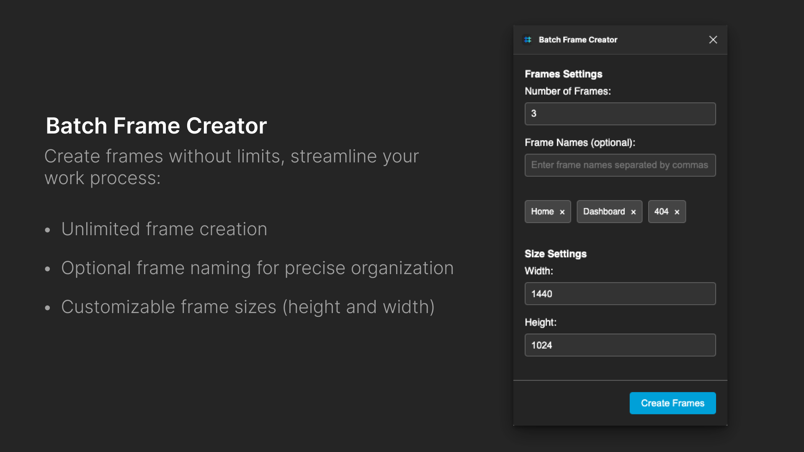

UX Designer, Front-end Developer
05.2024
UX Design, Wireframing, UX Research, UI Design, Develop
As the sole creator and developer of the Batch Frame Creator plugin, I, Luis Villasmil, undertook a personal project to address a common pain point encountered in UI/UX design: the laborious task of manually creating multiple frames in Figma. This case study delves into my end-to-end involvement in the project, emphasizing the user-centric approach, integration of WCAG principles, and innovative utilization of AI in the development process.
Based on my own experiences and feedback from friends/colleagues, I identified a significant challenge in maintaining efficiency and consistency when creating numerous frames for design projects. Manual creation processes were prone to errors and could significantly slow down the design workflow, hindering creativity and productivity.
Based on personal experiences and feedback from friends/colleagues, I identified pain points and requirements related to frame creation. Determined key features and functionalities essential for a streamlined frame creation process.
Created wireframes and prototypes based on my understanding of user needs and design preferences. Iterated on designs based on personal insights and feedback from friends/colleagues to enhance usability and intuitiveness.
Based on my own experiences and feedback from friends/colleagues, I identified a significant challenge in maintaining efficiency and consistency when creating numerous frames for design projects. Manual creation processes were prone to errors and could significantly slow down the design workflow, hindering creativity and productivity.
Based on my own experiences and feedback from friends/colleagues, I identified a significant challenge in maintaining efficiency and consistency when creating numerous frames for design projects. Manual creation processes were prone to errors and could significantly slow down the design workflow, hindering creativity and productivity.
Based on my own experiences and feedback from friends/colleagues, I identified a significant challenge in maintaining efficiency and consistency when creating numerous frames for design projects. Manual creation processes were prone to errors and could significantly slow down the design workflow, hindering creativity and productivity.